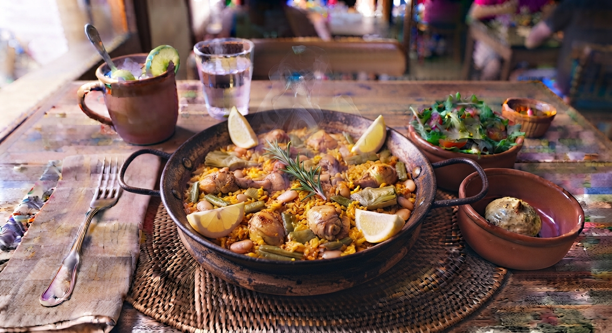

Paella Valenciana
O prato mais internacional da Espanha, originário de Valência. Uma vibrante mistura de arroz cozido com açafrão, carnes, mariscos frescos e legumes, preparado tradicionalmente numa panela rasa e larga chamada paella.

⏱️ Tempo: 1h
🍽️ Rendimento: 4 a 6 porções
🔥 Dificuldade: Média
Ingredientes
- 400g de arroz tipo Bomba (ou arbóreo)
- 500g de mariscos variados (camarão, mexilhões, lula)
- 300g de frango ou coelho cortado em pedaços
- 1 cebola e 2 dentes de alho picados
- 1 pimentão vermelho cortado em tiras
- 1 pitada generosa de açafrão em pistilos
- 1 litro de caldo de peixe ou de carne quente
- Azeite de oliva, sal e pimenta a gosto
Modo de Preparo
- Numa paelheira ou frigideira larga, aqueça o azeite e doure os pedaços de carne até ficarem bem corados.
- Adicione a cebola, o alho e o pimentão cortado em tiras, refogando bem.
- Acrescente o arroz e misture para absorver os sabores, juntando depois o açafrão.
- Despeje o caldo quente por cima e disponha os mariscos uniformemente pela panela.
- Deixe cozinhar em lume médio-baixo por cerca de 20 minutos sem mexer, permitindo que se forme uma crosta dourada e crocante no fundo (o socarrat). Sirva quente.